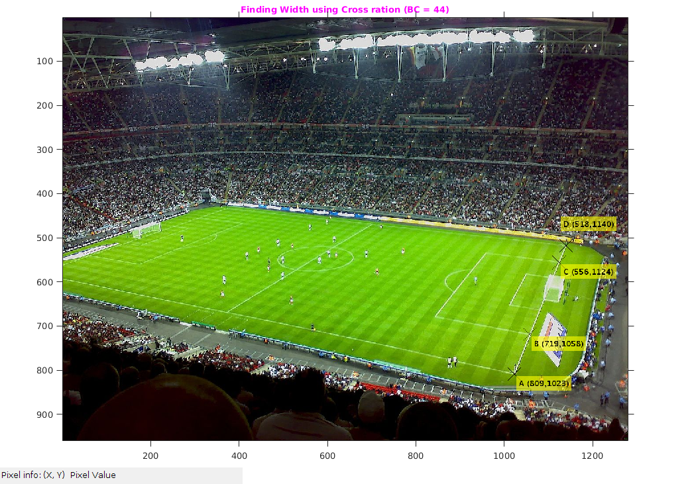
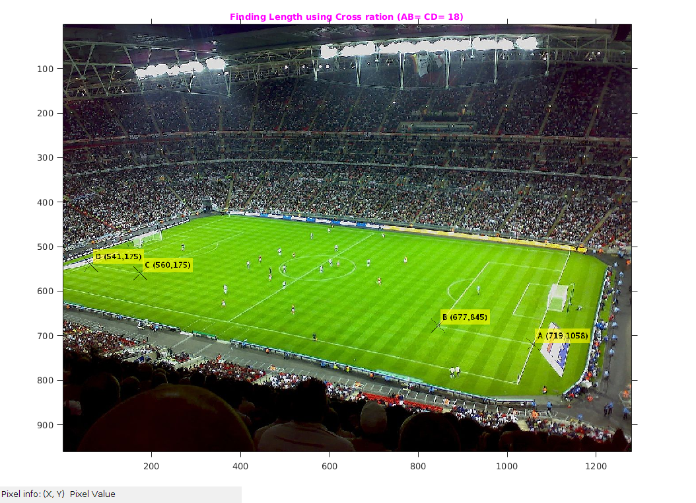

Assignment2-2 (Cross Ratio)
Rollno: 163059009, 16305R011, 16305R001
Contents
Init
file='../input/wembley.jpeg'; img=imread(file); dim=size(img); format shortG
1) Finding Width of Stadium using Cross-ration
tic;
colinearPtWidth=[
809,1023 ; %A
719,1058 ; %B
556,1124 ; %C
518,1140 ; %D
];
img1=img;
pt=colinearPtWidth;
noOfPoints=size(pt,1);
for i=1:noOfPoints
img1 = insertMarker(img1,[pt(i,2),pt(i,1)],'x','color','black','size',15);
end
img1= insertText(img1,[pt(1,2)+5,pt(1,1)+5],strcat('A (',num2str(pt(1,1)),',',num2str(pt(1,2)),')'), 'FontSize',18,'BoxColor', 'yellow');
img1= insertText(img1,[pt(2,2)+5,pt(2,1)+5],strcat('B (',num2str(pt(2,1)),',',num2str(pt(2,2)),')'), 'FontSize',18,'BoxColor', 'yellow');
img1= insertText(img1,[pt(3,2)+5,pt(3,1)+5],strcat('C (',num2str(pt(3,1)),',',num2str(pt(3,2)),')'), 'FontSize',18,'BoxColor', 'yello');
img1= insertText(img1,[pt(3,2)+5,pt(4,1)-65],strcat('D (',num2str(pt(4,1)),',',num2str(pt(4,2)),')'), 'FontSize',18,'BoxColor', 'yellow');
figure('name','Width image');
imshow(img1);
impixelinfo;
title('\fontsize{10}{\color{magenta}Finding Width using Cross ration (BC = 44)}');
axis tight,axis on;
% Cross ratio (2D). (AC*BD)/(AD*BC).
AC=norm([pt(1,1)-pt(3,1),pt(1,2)-pt(3,2)]);
AD=norm([pt(1,1)-pt(4,1),pt(1,2)-pt(4,2)]);
BC=norm([pt(2,1)-pt(3,1),pt(2,2)-pt(3,2)]);
BD=norm([pt(2,1)-pt(4,1),pt(2,2)-pt(4,2)]);
lamda= (AC * BD) / (AD * BC);
% We Know that 3D world AB == CD = k and BC=44 yard
% Cross ration (3D): (AC*BD)/(AD*BC) = lamda
% Therefore ( (k+44) * (k+44) ) / ( (2k+44) * 44 ) = lamda = 1.0675
% Solving the Quadratic equation for finding "k".
% k^2 + (1-lamda) * 88)k + ((1-lamda)*44^2) = 0
r = roots([1,(1-lamda)*88,(1-lamda)*44^2]);
% Positive root value as distance is positive
k = r(find(r>=0));
% Therefore Width = 2*k + 44;
width= 2*k + 44;
fprintf('\n ** Width: %f yard\n',width);
Warning: Image is too big to fit on screen; displaying at 67% ** Width: 74.834600 yard
2) Finding Length of Stadium using Cross-ration
A = [719,1058]; B = [677,845]; C=[560,175]; D=[541,64]; colinearPtLen=[719,1058; %A 677,845 ; %B 560,175 ; %C 541,64 ; %D ]; img1=img; pt=colinearPtLen; noOfPoints=size(pt,1); for i=1:noOfPoints img1 = insertMarker(img1,[pt(i,2),pt(i,1)],'x','color','black','size',15); end img1= insertText(img1,[pt(1,2)+5,pt(1,1)-35],strcat('A (',num2str(pt(1,1)),',',num2str(pt(1,2)),')'), 'FontSize',18,'BoxColor', 'yellow'); img1= insertText(img1,[pt(2,2)+5,pt(2,1)-35],strcat('B (',num2str(pt(2,1)),',',num2str(pt(2,2)),')'), 'FontSize',18,'BoxColor', 'yellow'); img1= insertText(img1,[pt(3,2)+5,pt(3,1)-35],strcat('C (',num2str(pt(3,1)),',',num2str(pt(3,2)),')'), 'FontSize',18,'BoxColor', 'yellow'); img1= insertText(img1,[pt(4,2)+5,pt(4,1)-35],strcat('D (',num2str(pt(4,1)),',',num2str(pt(3,2)),')'), 'FontSize',18,'BoxColor', 'yellow'); figure('name','Lendth image'); imshow(img1); impixelinfo; title('\fontsize{10}{\color{magenta}Finding Length using Cross ration (AB= CD= 18)}'); axis tight,axis on; % Cross ratio (2D). (AC*BD)/(AD*BC). AC=norm([pt(1,1)-pt(3,1),pt(1,2)-pt(3,2)]); AD=norm([pt(1,1)-pt(4,1),pt(1,2)-pt(4,2)]); BC=norm([pt(2,1)-pt(3,1),pt(2,2)-pt(3,2)]); BD=norm([pt(2,1)-pt(4,1),pt(2,2)-pt(4,2)]); lamda= (AC * BD) / (AD * BC); % We Know that 3D world BC = k and AB = CD = 18 yard % Cross ration (3D): (AC*BD)/(AD*BC) = lamda % Therefore ( (k+18) * (k+18) ) / ( (k+2*18) * k ) = lamda = 1.0356 % Solving the Quadratic equation for finding "k". % (1-lamda)k^2 + ((1-lamda) * 36)k + 18^2) = 0 r = roots([1-lamda,(1-lamda)*36,18^2]); % Positive root value as distance is positive k = r(find(r>=0)); % Therefore Width = k + 2*18; length= k + 2*18; fprintf('\n ** Length: %f yard\n',length);
Warning: Image is too big to fit on screen; displaying at 67% ** Length: 115.091019 yard
3. Output
Calulated Length and Width of playing area using Cross ration Length = 115.091 yard Width = 74.834 yard